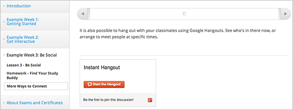
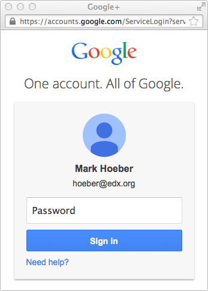

6.15. 谷歌即时群聊工具¶
该主题描述在你的课程中如何使用即时群聊，请参照：
- 群聊概观
- 列入你的域名到谷歌群聊白名单
- 课程群聊
- 学习者的经验
- 限制
- 创建即时群聊
6.15.1. 概观¶
你可以直接从你的课程中添加学习者参与到即时群聊里的能力。
在即时群聊里，学习者可以：
- 通过视频和音频直播进行互动；
- 分享屏幕一起看视频；
- 就文档进行合作。
即时群聊特性的详细列表，请参照 Google Hangouts page.
6.15.2. 列入你的域名到谷歌群聊白名单¶
如果你在运行一个Open edX网站，你应该确保你的域名在谷歌白名单里且作为一个到谷歌群聊的引用。
6.15.3. 课程群聊¶
你可以在课程中添加一个或更多即时群聊。比如，你可以在下列地方添加一个即时群聊：
在页面中给学习者提供一个完整课程的群聊，请参照 添加页到课程 以获得更多信息。
- 在一个HTML组件中，提供一个让学习者在特定课程单元上合作的群聊，请参照
与HTML协作 以获得更多关于创建HTML组件的信息。
一个即时群聊是特定于打开它的页面的。例如，从一个课程单元加入到一个群聊里的学习者彼此互动，而从另一个课程单元来的学习者加入到一个不同的群聊里互动。
6.15.4. 学习者的体验¶
当你增加一个即时群聊到你的课程中，会在页面上出现一个群聊管理。下面的例子展示了在一个课程中的管理。管理显示学习者可以开始一个群聊并成为第一个参与者。
{kind=link}
- 开始一个群聊，学习者选择 开始群聊 。（在第一个学习者选择
- 开始群聊 后，其他的学习者可以看到 加入群聊 按钮。）
- 接下来的下例子展示当一个群聊已经被创建后页面的管理。管理有一个
- 加入群聊 的按钮，并显示另一个学习者已经在群聊里了。
{kind=link}
要加入一个群聊，学习者选择 加入群聊 .
如果没有登陆，学习者会被提示登陆谷歌：
{kind=link}
没有谷歌账号的学习者可以从登陆页面创建一个账号。
在学习者登陆谷歌后，群聊会另打开一个浏览器窗口：

6.15.5. 限制¶
目前一个即时群聊只允许10个学习者加入，你应该在课程材料中注明。
在课程中，学习者从不同的页面开始的群聊会被独立计数，所以你会有10位来自一个单元的学习者在一个群聊中，10位来自不同的单元的学习者在一个群聊中。
6.15.6. 创建即时群聊¶
在课程中创建一个即时群聊：
把这个文件中的文本复制到你的电脑上的文本编辑器，然后保存为JavaScript文件（也就是，在你保存文本时，把后缀.txt改成.js）。
Note
确保复制的是原GitHub文件，因为它不含格式。不要复制带格式的文件。任何格式都会导致JavaScript不能正常工作。
指向你的课程中 文件及更新 页面的JavaScript文件， 请参照 添加文件到课程中 获得更多详细信息。
在页面或HTML组件中，打开HTML编辑器。
在第一行，添加你上传的JavaScipt文件到一个<script>标签中，确保你使用了完全打开和关闭的标签。
例如，如果你的JavaScript文件是以 instanthangouts-0.1.0.js 命名的，你可以按下面的方式输入:
<script src='/static/instanthangouts-0.1.0.js'></script>
在<script> 标签后面，添加:
<div class='instanthangouts'/>
添加任何你要添加的文本和标签。
例如，完整的HTML可以是这样的:
<p>Join an instant hangout by selecting the button below. You can use the hangout to have live video discussions with other learners.</p> <script src='/static/instanthangouts-0.1.0.js'></script> <div class='instanthangouts'/>
在课程中测试即时群聊
6.15.6.1. 更新JavaScript文件¶
谷歌会周期性更新即时群聊的JavaScript文件，要接收更新通知，去到 instant hangouts repository page，然后在页面右上方选择 查看
在你的课程中为了使用更新的JavaScript文件，我们建议你从仓库复制JavaScript到与你上传到课程中的同名文件中。当你上传新文件时，旧的文件会被新的文件替换掉。
Warning
如果在你上传文件的文件名中包含了版本号，在你每次更新JavaScript文件时，你必须编辑任何包含了即时群聊管理的HTML组件或页面。